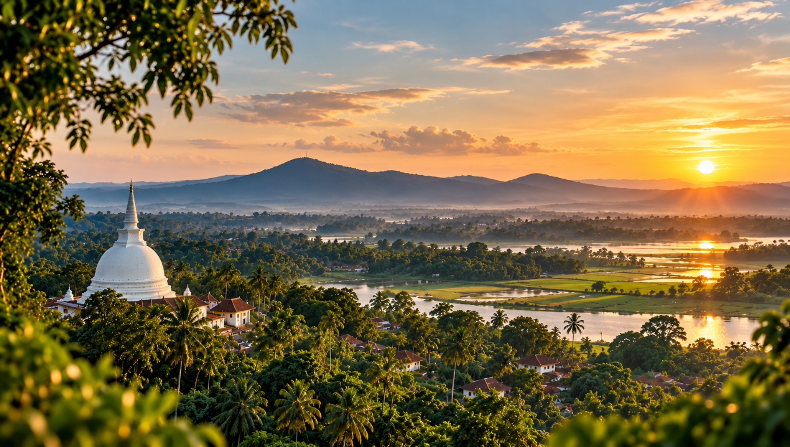

Start with what you like
Choose a category or search by name. Open a place to see its hours, facilities and a few practical notes.
A considered guide to places worth discovering around Kirindiwela and Bandaranaikepura. Find a quiet temple, a forest path or a garden for the afternoon — then bring your day together.

Distances are approximate from Bandaranaikepura.
Open a place in Maps for directions.
Attraction coordinates have not been independently verified. Map search results are approximate; confirm the exact location before travelling.
Add places from the guide and put them in an order that suits you. Your plan stays on this device, so you can come back to it later.
Indicative only. Hours and travel time are not checked live.
Choose a category or search by name. Open a place to see its hours, facilities and a few practical notes.
Add a few stops to your itinerary. The total is an indicative sum of distances from the starting area, not the distance between stops.
Opening times, fees and road conditions can change. Check directly with each place before you set off.